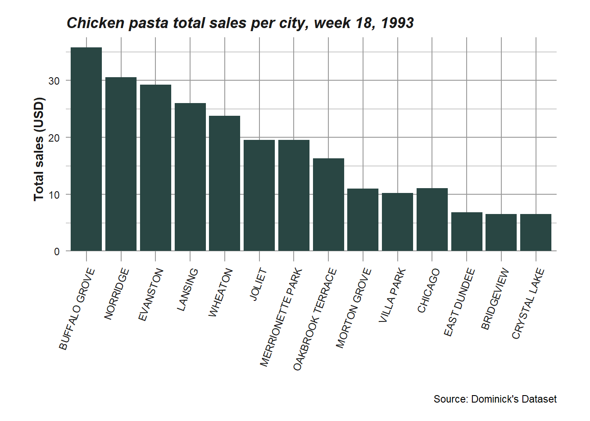
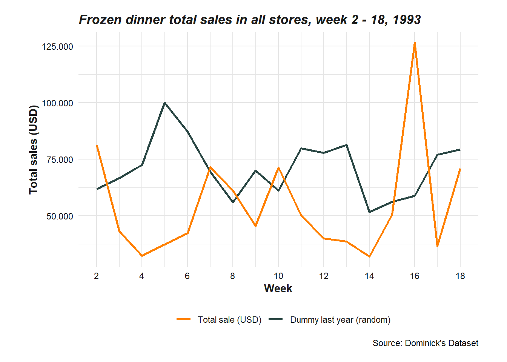
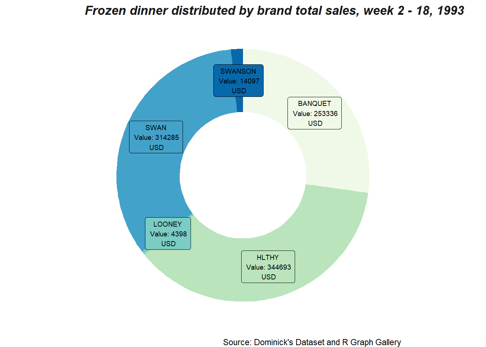
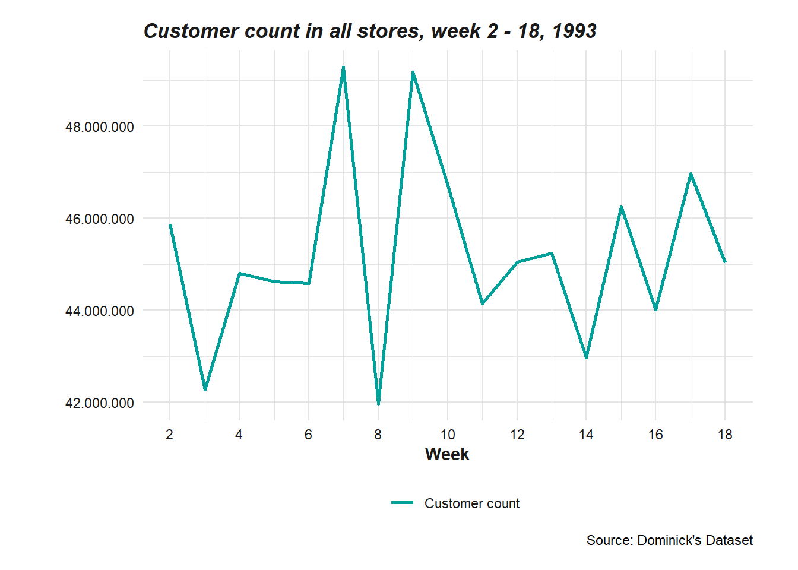
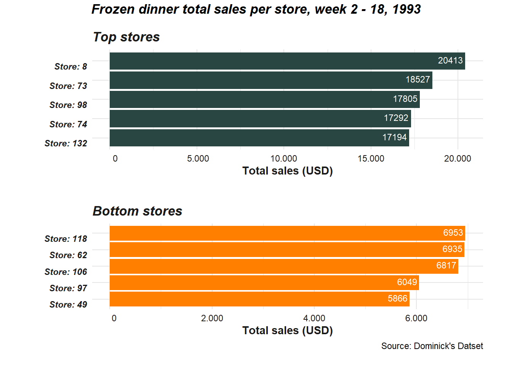
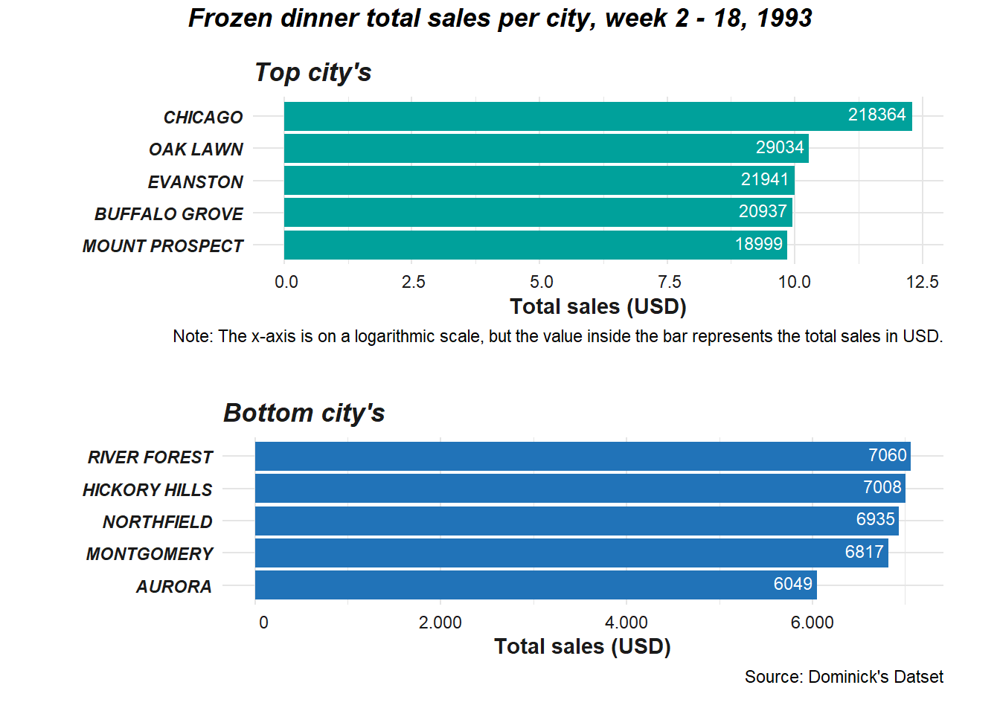
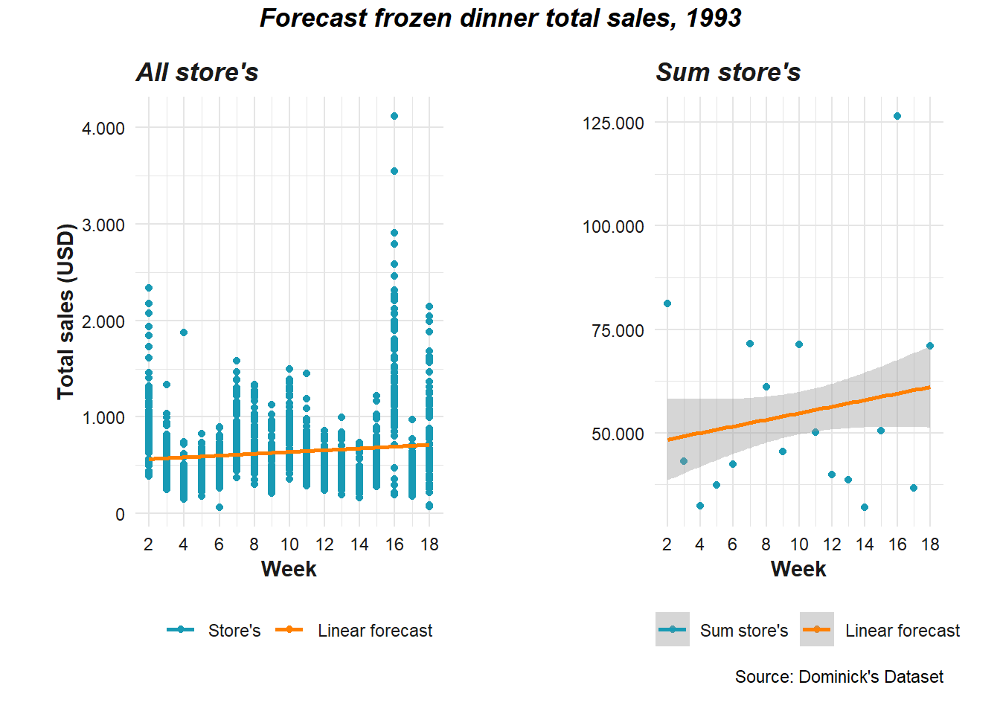
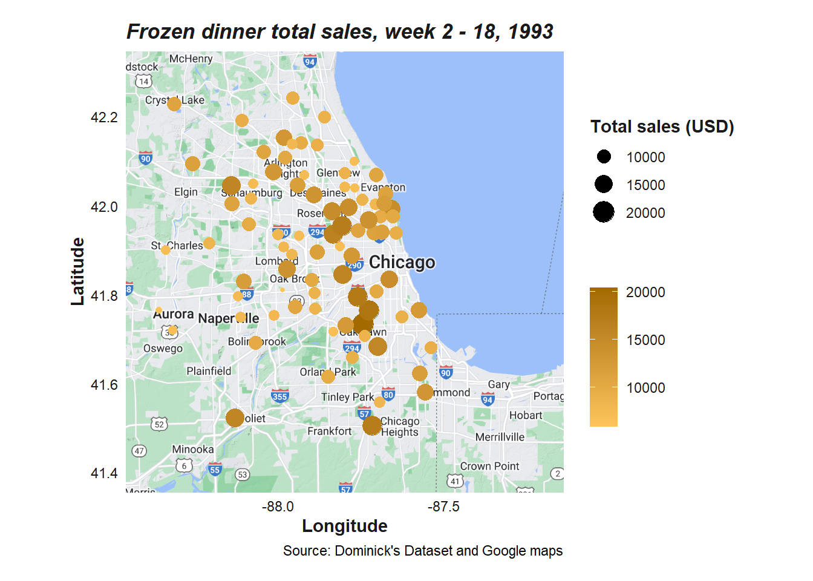
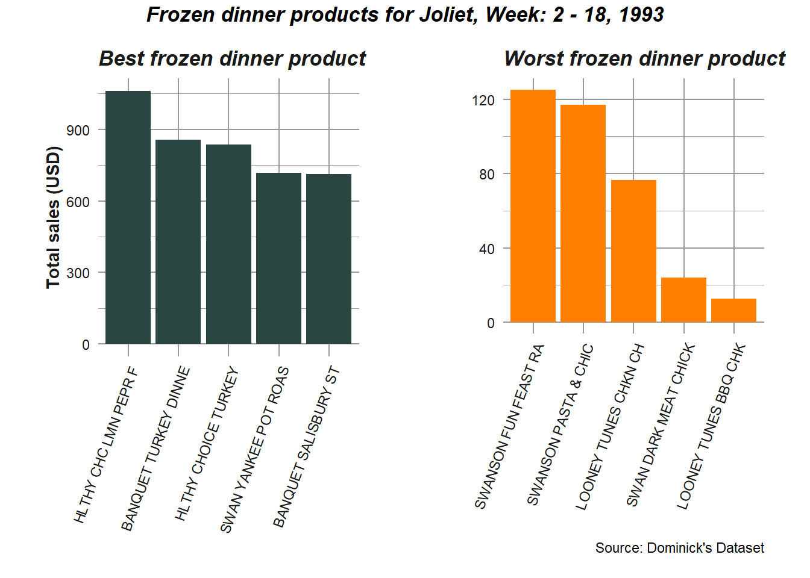

SOK-1005_Prosjektoppgave_V23
Introduksjon
Bakgrunnen for denne prosjektoppgaven i SOK-1005 (datavitenskap for økonomer) er at jeg er ansatt som analytiker i Insight Analytics (IA), og selskapet som eier dataen jeg skal benytte meg av har lyst ut en anbudskonkurranse. De ønsker å få utviklet et system som rapporterer salg for alle utsalgssteder i sitt konsern. Dataen skal benyttes for å vise hva jeg kan levere på. Alt potensiell data som kan bli inkludert i oppgave 2-4 vil ikke bli visualisert og fokuset vil være på korte, men presise rapporter som raskt gir ledelsen ett overblikk over selskapets resultat. Relevant data som ikke blir visualisert vil bli nevnt i tekst format og kan bli lagt inn visst selskapet velger Insight Analytics (IA).
Dataen som skal benyttes i denne oppgaven er hentet fra Dominick’s Dataset. Datasettet dekker skannerdata på butikknivå samlet inn hos Dominick’s Finer Foods over en periode på mer enn syv år. Datasettet inneholder to typer filer: kategorispesifikke filer og generelle filer. De generelle filene inneholder informasjon om alle kategoriene i prosjektet.
Innhenting av data (oppgave 1)
I oppgave 1 skal vi skrive R/Python kode som slår sammen de 4 datasettene hentet fra Dominick’s Dataset. Denne oppgaven er gjennomført i en separat qmd fil i dette GitHub reposetoriet: Data/SOK-1005_Prosjektoppgave_V23_Data.qmd. Dataen fra denne qmd filen er blitt lagret i samme mappe som en csv fil (Data/Dataframe_Project.csv). Det er denne filen vi skal bruke videre i denne prosjektoppgaven.
Ukentlig salgsrapport (oppgave 2)
I oppgave 2 skal vi benytte dataen i oppgave 1 til en ukentlig salgsrapport til et enkelt utsalg.
En ukentlig salgsrapport for et enkelt utsalg bør gi en oversikt over produktets ytelse, identifisere trender og utforske områder som kan forbedres. I denne rapporten vil vi ta utgangspunkt i at uke 18 er den aktuelle uken og at ledelsen ser på denne rapporten i starten av uke 19. Nedenfor følger noen punkter og figurer jeg mener bør være en del av denne salgsrapporten.
Ukentlig salgssammendrag
Det ukentlige salgssammendraget bør inneholde ett sammendrag av salget den aktuelle uken og/eller sammenlignes med tidligere uker. Hensikten med denne oversikten er at ledelsen raskt får en forståelse av hvordan produktet presterer denne uken og identifisere eventuelle endringer i fra trenden. Tabellene nedenfor viser det totale salget i antall, gj.snittlig fortjeneste, gj.snittlig salgspris og det totale salget (USD). Med bruk av en slik tabell kan ledelsen enkelt se mønster og hva som er gjort forskjellig den aktuelle uken mot tidligere uker.
Chicken pasta summary all stores, week 15 - 18, 1993
| Week | Total sold (qty) | Avg. profitt (%) | Avg. price (USD) | Total sale (USD) | Net Profit (USD) |
|---|---|---|---|---|---|
| 15 | 76 | 41.52 | 3.32 | 250.01 | 103.80 |
| 16 | 1464 | 31.03 | 2.36 | 3445.74 | 1069.21 |
| 17 | 74 | 43.21 | 3.33 | 246.90 | 106.69 |
| 18 | 76 | 44.23 | 3.40 | 256.10 | 113.27 |
Source: Dominick’s Dataset
Når selskapet er så stort som det er i dette datasettet kan det også være hensiktsmessig og se på hvilke regioner/butikker som totalt sett har solgt mest den aktuelle uken. På denne måten kan ledelsen gå inn å se på butikken/butikkene som har solgt mest og se hva de gjør annerledes. På figuren under kan vi se total salg per by/region, dette kan også gjøres med butikker.

I begge figurene over kan det også være hensiktsmessig å se på tall fra samme uke året før. Dette vil gi ledelsen ett bedre bilde om hvordan utviklingen egentlig har vært. Visst noen produkter selger bedre på forskjellige årstider er det naturlig med oppgang/nedgang i perioder. Men visst man sammenligner med året før vil forutsetningene for salg være likere. Det kan også være hensiktsmessig å se på daglig data for å få en oversikt over om produktet selger bedre på noen dager enn andre. I denne prosjektoppgaven har vi kun valgt data fra 1 år, på ukentlig nivå, så dette vil ikke bli visualisert.
Månedlig salgsrapport (oppgave 3)
I oppgave 3 skal vi benytte dataen i oppgave 1 til en månedlig salgsrapport på aggregert nivå til konsernledelsen.
En månedlig salgsrapport på aggregert nivå bør gi konsernledelsen en oversikt over selskapet samlede salgsytelse og nøkkelinformasjon som gir innsikt i de forskjellige butikkene/områdenes resultater som kan bidra i beslutningsprosesser. I denne rapporten vil vi ta utgangspunkt i at uke 18 er den aktuelle uken og at ledelsen ser på denne rapporten i starten av uke 19. Det vil i denne rapporten være fokus på brutto total salg, dette kan endres til netto ved å gange med avg. profitt variabelen. Det vil ikke være hensiktsmessig å ha begge deler siden figurene vil se helt lik ut bare en prosentandell høyere/lavere. Nedenfor følger noen punkter jeg mener bør være en del av den månedlige salgsrapporten.
Månedlig salgssammendrag
Et månedlig salgssammendrag bør vise konsernledelsen de månedlige salgsresultatene. På figuren nedenfor kan vi se de totale ukentlige resultatene gjennom hele året så langt, samt at det er lagt inn en “dummy” som representerer året før. Hensikten med denne figuren er å gi konsernledelsen en forståelse for konsernets generelle ytelse og identifisere trender, som f.eks. uke 16. Med å sammenligne med året før vil man kunne si mere om det er trender som gjentar seg eller om det er mer “tilfeldig”.

Salg etter produkt/merke
Det vil også være hensiktsmessig for ledelsen å få ett overblikk over ytelsen til merkene blant “frozen dinner” produktene. Dette vil kunne hjelpe ledelsen i framtidige avgjørelsen om hvilke merker, eventuelt produkter de vil fortsette å selge, og hvilke de vil bytte ut. På figuren nedenfor ser vi dette visualisert.

Kundeinformasjon
Kundeinformasjonen bør gi ledelsen ett overblikk over utviklingen av antall kunder og hvilke kunder som har handlet de siste månedene. Dette vil hjelpe ledelsen med å forstå sammensetningen av kunder som handler i deres butikk, og i framtiden kunne ta avgjørelser som styrker kunderelasjoner og øke salget. Nedenfor kan vi se antall kunder per uke så lang i år. Her kan det også inkluderes ett “pie-chart” av de største kundegruppene, men siden butikkene er lokalisert på så forskjellige området vil det på aggregert nivå ikke kunne gi nøyaktig nokk data. Vi vil komme tilbake til hvordan dette kan gjøres i oppgave 4.

Salg etter geografisk område
Etter at ledelsen har fått en oversikt over hele konsernet på aggregert nivå kan det være hensiktsmessig å gi en oversikt over hvilke butikker som har solgt mest og minst av “frozen dinner” produktene. Dette kan hjelpe ledelsen med å identifisere hvilke butikker som presterer best og hvilke butikker som kan forbedres. Her kan ledelsen se på hva butikkene som selger mest gjør, kontra butikkene som selger minst.

Det kan også være hensiktsmessig å se på hvilke regioner/byer som selger mest total sett uavhengig av butikker for å få en indikasjon på hvor etterspørselen etter “frozen dinner” er størst. Vi vil gå enda mer i detalj på dette i oppgave 4.

Prognoser
Avslutningsvis i en månedlig salgsrapport kan det være gunstig for ledelsen å få ett overblikk over hvordan utviklingen kan forventes å være framover. Dette kan/bør være en egen rapport, men på figurene under kan vi se en enkel lineær modell som tar utgangspunkt i både salgene til alle butikkene, men også det totale salget. Figuren som viser alle butikkene vil gi en indikasjon av forventet salg per butikk, mens figuren som viser summen av alle butikkene vil gi en indikasjon av forventet salg på konsern nivå. Det gråe området rundt linjen på figuren med summen av alle butikkene representerer SE (standard error). En kort forklaring på dette er at SE viser feilmarginen til målingen.

Nye utsalg (oppgave 4)
I oppgave 4 skal vi se på om dataen kan benyttes til å planlegge nye utsalg og hvordan konsernledelsen kan benytte dataen til å finne den beste lokasjonen.
Vi vil i denne oppgaven ta utgangspunkt i at ledelsen ser på denne rapporten i starten av uke 19. For å planlegge nye utsalg kan det være hensiktsmessig å se på salgsdata etter geografisk område. På denne måten kan ledelsen identifisere områder med høyt salg, noe som kan indikere høy etterspørsel.

På kartet over kan vi se Chicago området med alle butikkene markert etter farge og størrelse som representerer totale salg i USD. På denne måten kan ledelsen lokalisere mulige lokasjoner for nye utsalg med å se på hvor de har høye salg. For eksempel i Joliet (nede til venstre) kan vi se at det er en enkelt butikk med høyt totalt salg. Her kan det være interessant for ledelsen og se på kundeprofiler og kjøpsatferd for denne butikken slik at de får en bedre forståelse for hvorfor denne butikken selger så bra, i motsetning til butikkene i for eksempel Aurora området. Under følger en tabell som ett eksempel på disse kundegruppene.
Avg. customer groups for Joliet, week 2 - 18, 1993
| Median Income (USD) | Avg. Household Size | % with No Vehicles | % College Graduates | % Pop over age 60 | % of household with over $200k |
|---|---|---|---|---|---|
| 33268.01 | 2.62 | 8.11 | 16.57 | 19.02 | 1.98 |
Source: Dominick’s Dataset
Visst vi fortsetter med eksempelet fra forrige avsnitt med Joliet og Aurora området kan en av grunnene til at total salget er så forskjellig være at i Joliet området har butikken truffet bra med sortimentet mot sin kundegruppe, og truffet mindre bra i Aurora. Det kan derfor være interessant for ledelsen og se på produktpopularitet sammen med geografisk lokasjon og kundegruppe. På denne måten kan man finne den beste kombinasjonen av varer der man ønsker å starte ett nytt utsalg. Under følger en figur som viser de beste og dårligste produktene etter totalt salg.

Andre analyser man bør gjennomføre for å finne den beste lokasjonen for ett nytt utsalg er en markedsanalyse og salgsanalyse. Markedsanalysen fokuserer på markedet og konkurransen på potensielle området. Hensikten med en slik analyse er å se om markedet i området allerede er “fullt opp” av konkurrenter, altså hvor stor etterspørsel det er i området. En salgsanalyse vil gi informasjon om fremtidig etterspørsel på aktuelle området. Dette vil gi ledelsen en indikasjon på om potensielle området vil kunne gjøre det bra i framtiden. Dette er større og mer omfattende rapporten enn denne analysen.
Kilder
- James M. Kilts Center, University of Chicago Booth School of Business. (2018, oktober). Dominick’s Dataset. https://www.chicagobooth.edu/research/kilts/datasets/dominicks
- R Graph Gallery. (I.D.). Donut chart with ggplot2. https://r-graph-gallery.com/128-ring-or-donut-plot.html